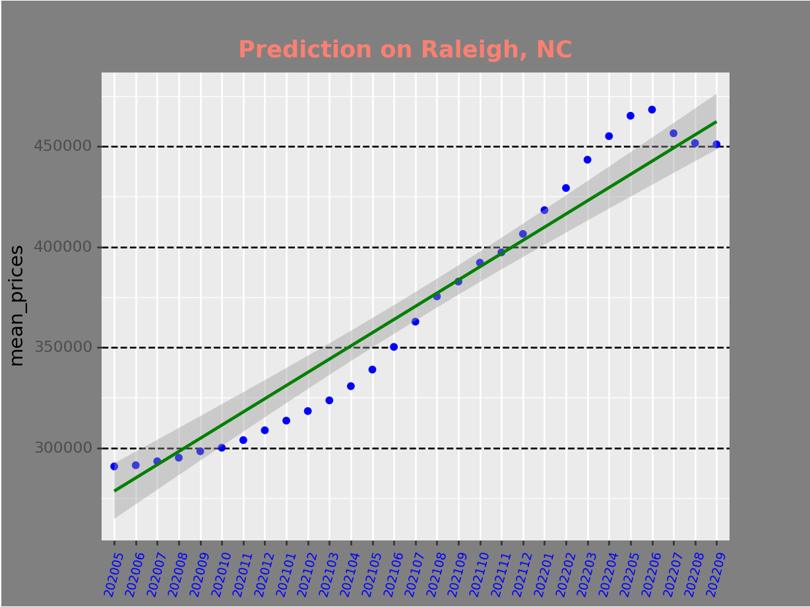

Python Linear Regression Modeling
This linear regression model uses raw data from Zillow’s Home Value Index(all homes-mid-tier). I work
through the raw data in a way to make the data suitable for the model. The first prediction for the whole data set is 16.91%, terrible. The second prediction
is for the State of North Carolina with 12.53% as the result, even worse. The third prediction focused on Raleigh, North Carolina with 63.76% as the result.
The timeline focus was increased until a solid result could be reproduced.
- The Best Prediction Result so far is 90.47%,
- This was achieved by focusing the prediction on one city and a more focused timeline.

Install the necessary Rstudio libraries
library(tidyverse)── Attaching packages ─────────────────────────────────────── tidyverse 1.3.2 ──
✔ ggplot2 3.3.6 ✔ purrr 0.3.4
✔ tibble 3.1.8 ✔ dplyr 1.0.9
✔ tidyr 1.2.0 ✔ stringr 1.4.0
✔ readr 2.1.2 ✔ forcats 0.5.1
── Conflicts ────────────────────────────────────────── tidyverse_conflicts() ──
✖ dplyr::filter() masks stats::filter()
✖ dplyr::lag() masks stats::lag()library(readxl)
library(readr)
library(reticulate)Install the necessary python tools
from matplotlib import *
import numpy as np
import pandas as pd
from plotnine import *
# for the modeling
import openturns as ot
from sklearn.linear_model import LinearRegression
from sklearn.model_selection import train_test_splitBegin with reading in the file and assigning it to a dataframe.
The next step will be to remove any zeros, empty cells and NaNs.
- Once bad data removal is verified we will proceed with modifying the data to a better format.
Python uses pandas melt function to convert many columns into fewer columns with more rows that are useful.
We will also convert the dates to a more testing and graph friendly format.
# read the file
df = pd.read_csv("C:/Users/ducat/Documents/Portfolio/R/Python_train_test/Housing_Zillow.csv")
# do we have any nulls?
print('Nulls within the columns\ Data to clean\n', df.isnull().sum())
# merge the columns into rowsNulls within the columns\ Data to clean
RegionID 0
SizeRank 0
RegionName 0
RegionType 0
StateName 1
..
2022-05-31 3
2022-06-30 3
2022-07-31 2
2022-08-31 1
2022-09-30 1
Length: 326, dtype: int64df1=pd.melt(df,id_vars=['RegionID','SizeRank','RegionName','RegionType','StateName'],var_name='year', value_name='mean_prices')
#drop all rows with nan or None
df1=df1.dropna()
df2=df # to be used later to graph when a date is necessary
df2=pd.melt(df,id_vars=['RegionID','SizeRank','RegionName','RegionType','StateName'],var_name='year', value_name='mean_prices')
df2=df2.dropna()
# do we still have any nulls?
print('Nulls within the columns\ Data to clean\n', df1.isnull().sum())
# convert the date to Ym formatNulls within the columns\ Data to clean
RegionID 0
SizeRank 0
RegionName 0
RegionType 0
StateName 0
year 0
mean_prices 0
dtype: int64df1['year'] = pd.to_datetime(df1['year']) # converts the year to date time
df1['year'] = df1['year'].dt.strftime('%Y%m') # converts the year-monthBegin the Linear Regression Modeling:
We will assign the features(columns) to test.
Next we will assign the target(to test for) column.
This modular design allows me to quickly test additional arguments.
LinearRegression()In a Jupyter environment, please rerun this cell to show the HTML representation or trust the notebook.
On GitHub, the HTML representation is unable to render, please try loading this page with nbviewer.org.
LinearRegression()
The prediciton score for the whole dataframe is: 16.91 %16.91% is terrible.
I will need to improve that significantly.
We will try to improve the prediction by selecting one state, North Carolina in this instance, and see how the testing goes.
Index(['RegionID', 'SizeRank', 'RegionName', 'RegionType', 'StateName', 'year',
'mean_prices'],
dtype='object')LinearRegression()In a Jupyter environment, please rerun this cell to show the HTML representation or trust the notebook.
On GitHub, the HTML representation is unable to render, please try loading this page with nbviewer.org.
LinearRegression()
The prediciton score for the state of North Carolina is: 12.53 %12.53% accuracy, that’s worse than the whole data set!
Another test, this time a more focused test on one city within one state:
- Primary focus: Raleigh, NC
- I am anticipating the best results here
LinearRegression()In a Jupyter environment, please rerun this cell to show the HTML representation or trust the notebook.
On GitHub, the HTML representation is unable to render, please try loading this page with nbviewer.org.
LinearRegression()
The prediciton score for Raleigh, NC is: 63.76 %63.76% is much better but there must be a better prediction out there.
This next prediction will be tuned to the dates,
Begins on: Jan 2017
Ends on: Sept 2022
LinearRegression()In a Jupyter environment, please rerun this cell to show the HTML representation or trust the notebook.
On GitHub, the HTML representation is unable to render, please try loading this page with nbviewer.org.
LinearRegression()
The prediciton score for Raleigh, NC is: 76.07 %76.07% accuracy, this is one tough market.
LinearRegression()In a Jupyter environment, please rerun this cell to show the HTML representation or trust the notebook.
On GitHub, the HTML representation is unable to render, please try loading this page with nbviewer.org.
LinearRegression()
The prediciton score for Raleigh, NC is: 90.47 %90.47% accuracy this time with a more refined timeline that focuses on the increased shift in demand through the most currently available downward trending data.
run_time: 17.44 seconds.
<ggplot: (124345345633)>